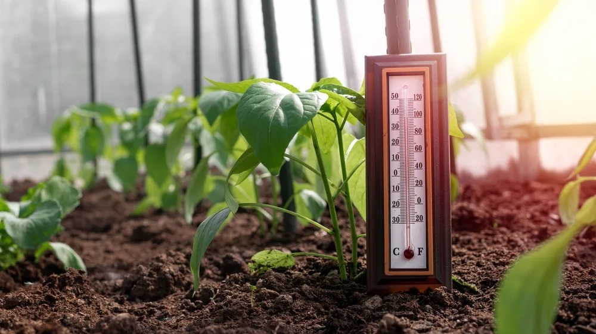

Plant Temperature Guidelines

Indoor Plants
- Optimal Temperature Range: Understand the temperature preferences of your indoor plants. Most common houseplants thrive in temperatures between 65-75°F (18-24°C).
- Avoid Drafts: Keep plants away from drafts, such as those from windows, doors, or air vents. Sudden temperature changes can stress plants.
- Monitor Winter Heating: During the winter, be cautious with heating systems. Indoor plants may suffer if the air becomes too dry and warm.
- Provide Adequate Ventilation: Ensure good air circulation around indoor plants. This helps regulate temperature and prevents stagnant air.
Outdoor Plants
- Research Temperature Tolerance: Understand the temperature range that suits your outdoor plants. Some plants are frost-tolerant, while others prefer warmer climates.
- Protect from Extreme Conditions: Shield plants from extreme temperatures, whether hot or cold. Consider using shade cloth during scorching summers or providing frost protection in winter.
- Watering Adjustments: Adapt your watering routine based on temperature. Plants may need more water during hot weather and less during cooler periods.
- Microclimates: Be aware of microclimates in your garden, as certain areas may experience different temperature ranges. Plant accordingly.